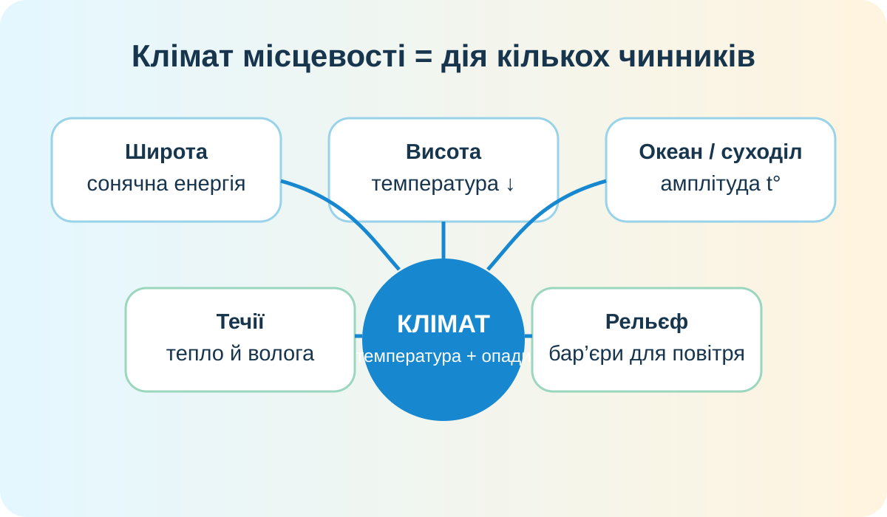
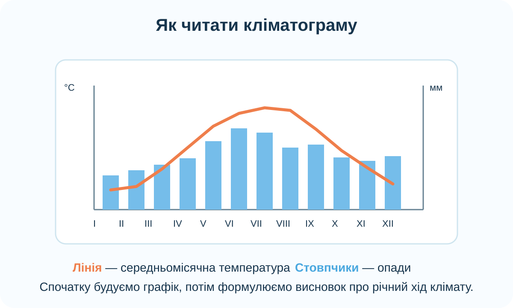

1. Практичне питання
Дві місцевості лежать на одній широті. Чому їхній клімат все одно може різнитися? Оберіть найсильніше пояснення.
2. Реальні супутникові дані: температура поверхні океану

NASA/GSFC Scientific Visualization Studio. Довготривала середня температура поверхні океану; найвиразніша глобальна закономірність — зниження температури від екватора до полюсів.
Порівняйте води біля екватора, 40–50° широти та полярних районів.
Знайдіть відхилення від простої широтної смугастості біля східного узбережжя Північної Америки.
Чому карта доводить роль широти, але водночас показує роль течій?
3. Схема кліматотвірних чинників

Визначає кут падіння сонячних променів і сезонний режим надходження енергії.
У тропосфері температура загалом знижується з висотою; гори також змінюють розподіл опадів.
Океан повільніше нагрівається й охолоджується, тому узбережжя часто має меншу річну амплітуду температур.
4. Інтерактив: передбачте наслідок чинника
5. Практична робота: будуємо кліматограму Києва
Нижче — кліматичні норми 1991–2020 для Києва: середньомісячна температура та місячна сума опадів. Джерело — Центральна геофізична обсерваторія імені Бориса Срезневського; значення узгоджуються з міжнародним набором кліматичних норм JMA.
| Місяць | I | II | III | IV | V | VI | VII | VIII | IX | X | XI | XII |
|---|---|---|---|---|---|---|---|---|---|---|---|---|
| t, °C | -3.2 | -2.3 | 2.5 | 10.0 | 15.8 | 19.5 | 21.3 | 20.4 | 14.9 | 8.6 | 2.6 | -1.8 |
| Опади, мм | 37 | 39 | 40 | 42 | 65 | 74 | 68 | 56 | 58 | 46 | 46 | 47 |
Обчисліть різницю між температурою найтеплішого і найхолоднішого місяців.
Підсумуйте місячні значення.
У яку частину року опадів загалом більше?
Дані: ЦГО ім. Б. Срезневського. Норма температури за рік — 9,0 °C; річна сума опадів — 618 мм.
6. Алгоритм кліматограми

- По горизонталі відкладаємо 12 місяців.
- Температуру показуємо лінією за шкалою °C.
- Опади показуємо стовпчиками за шкалою мм.
- Після побудови визначаємо найтепліший/найхолодніший місяць, амплітуду, річну суму та сезонність опадів.
- Лише після цього робимо висновок про кліматичний режим.
7. Коротке відео: океан як кліматичний чинник
NASA Goddard: океанічні течії, температура поверхні океану та взаємодія океану з атмосферою.
8. Теорія після практики
Кліматотвірні чинники
Географічна широта задає базовий енергетичний фон. Циркуляція атмосфери переносить тепло й вологу. Океани й течії перерозподіляють тепло. Висота та рельєф змінюють температуру й опади. Віддаленість від океану впливає на амплітуду температур і зволоження.
Головна закономірність
Широтність добре видно на глобальних картах температури, але реальна кліматична карта ніколи не є набором ідеально паралельних смуг: її деформують течії, материки, гори та циркуляція атмосфери.
9. CER — аргумент із доказами
Теза: «Широта — головний, але не єдиний чинник клімату».
10. Домашнє завдання
§13. За картою світу оберіть два міста приблизно на одній широті, але з різним положенням щодо океану або течій. Сформулюйте прогноз: де річна амплітуда температур має бути більшою і чому. Перевірте прогноз за надійним кліматичним джерелом.
Електронний підручник Гільберг — Довгань — Совенко, 7 клас →
11. Контроль 10/10
Тест відкриється після введення даних учня.